Kollekciók
Kollekciók, újdonságok.
Bemutatjuk a kínálatunkba érkező új kollekciókat.
30 bejegyzés

ECHO CELIO - egyszerre hideg és meleg
A Celio által nyújtott értelmezésben a hagyományos árnyalatok új, élénkítő ritmussal lüktetnek. Ez a ritmus adja a klasszikusnak érdekes és friss vonzerőt. A kollekció a bézs és a halvány szürke árnyalatok játéka.

ECHO TIVOLI - a klasszikus ragyogás
Az Echo Tivoli kollekciót az olaszországi Tivoli város környékéről származó hófehér kő ihlette. Tiszta formája tágasságot és makulátlan aurát kölcsönöz a belső térnek, miközben nyugtat és nyugtató ragyogást is hoz.

ECHO ANTICO - méltóságteljes elegancia
Az Echo a természet visszatükröződése. Szépségében, harmóniájában és egyediségében rejlik a varázsa. Finom visszhangokat teremt modern elrendezésben. Fedezze fel az új kollekciót 60x120-as formátumban, monoporosa technológiával gyártva.

DOMINO Linva
A LINVA tökéletesen kiegészíti a lágy minimalizmus, a modern spa, valamint a természetes anyagok, a homok és a mészkő ihlette enteriőrök stílusát. Modern, világos és nyugodt fürdőszobák igényeinek kielégítésére tervezték, ahol a fény, a textúra és a finom felületarchitektúra kulcsszerepet játszik.

DOMINO Pietra aurea
A Domino újabb sikeres kollekcióját szeretnénk bemutatni. A Pietra Aurea 30,8 x 60,8 cm-es burkolat és a Pietra Aurea Wood 30,8 x 60,8 cm-es burkolat tökéletes egyensúlyt teremt a világos, természetes kő és a sötét, finomított fa mély szerkezete között.
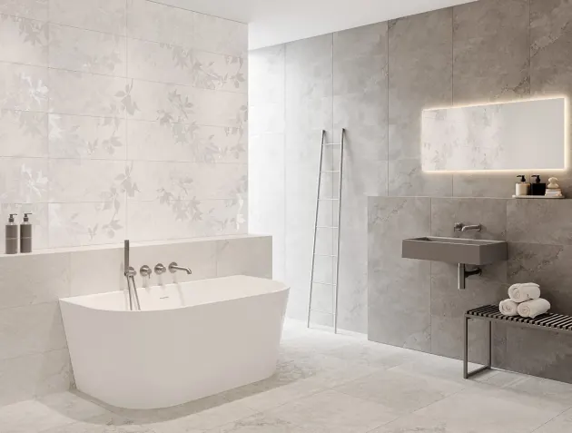
DOMINO Efemera
Az EFEMERA by DOMINO a fürdőszobai elegancia modern értelmezése, melyet a természet, a fény és a formák múlandósága ihletett. A finom struktúrák, a visszafogott színpaletta és a finom botanikai motívumok egy időtlen egészet alkotnak.
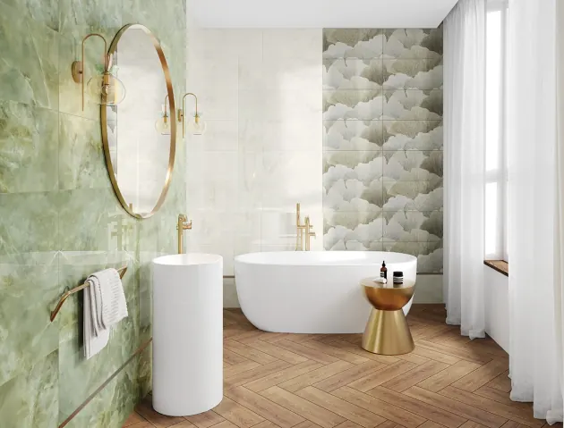
DOMINO Biloba 30,8x60,8
A Kerko DOMINO termékcsalád választéka 4 új kollekcióval gazdagodik, melynek egyik tagja a Biloba kollekció. Nagy kedvencünk a zöld szín, mely a mostani, friss választékban új, márvány hatású köntösben tér vissza a BILOBA termékcsalád képviseletében
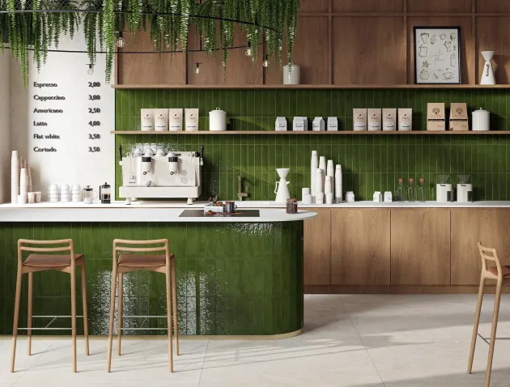
Palette - új Cerrad kollekció
A Palette Collection több, mint falburkolatok – egy eszköz, amely karakterrel teli tereket teremt. A Tubadzin Masovia és a Paradyz Monpelli után szinte már vártuk, hogy a Cerrad mivel lep meg minket a 7,4x30 cm-es méretkategóriában.
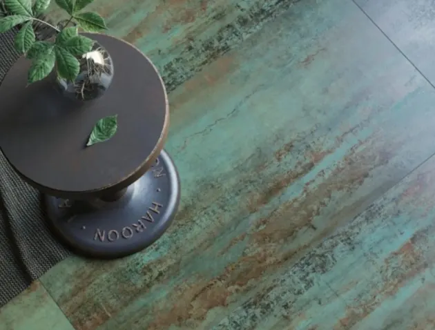
GLASGOW - stílust teremt
A Glasgow egy 60x120 cm-es rektifikált porcelánlap matt felülettel. Finom tónusátmenetekkel egységes és viszonylag visszafogott stílust teremt. A matt textúra nyers és minimalista hatást kölcsönöz az anyagnak, így könnyen illeszthető a különféle enteriőrökhöz. Ismerd meg a Kerkon keresztül a Glasgow izgalmas színválasztékát!
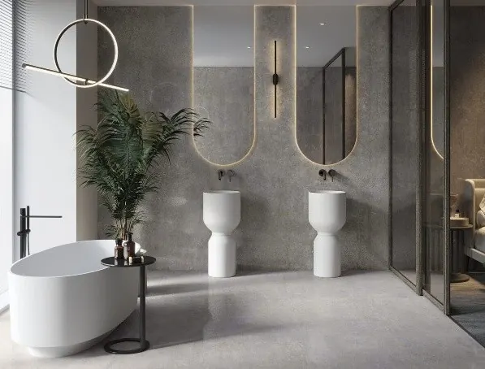
CERRAD újdonságok 2026
Fedezd fel a Cerrad állvány frissítésünk legújabb kollekcióit és azok szépségét. A gondosan kiválogatott Cerrad újdonságok mindegyik eleme valami mást, valami egyedit kínál a vásárlónak a felület, a megjelenés és a stílus tekintetében.Textural, Softstone, Modern Concrete, Distinct és Max Travertino.
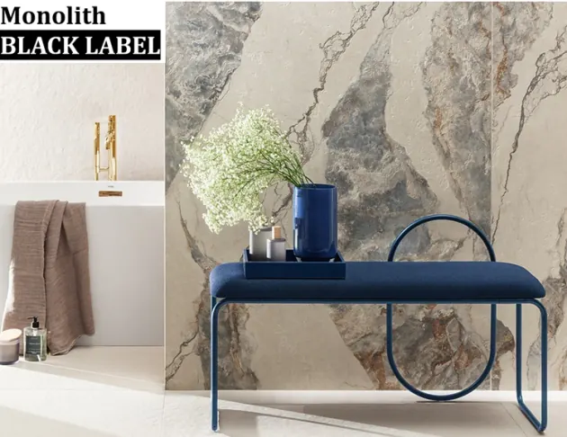
Monolith BLACK LABEL
Lengyelországi látogatásunk alkalmával megismerkedhettünk a Tubadzin újdonságaival, a Monolit BLACK LABEL-el. És mely családok tartoznak a Tubadzin MBL-be? River Crown, River Cliff, Travertigo és Albiano. Keresd a termékeket kizárólag a KERKO kínálatában.
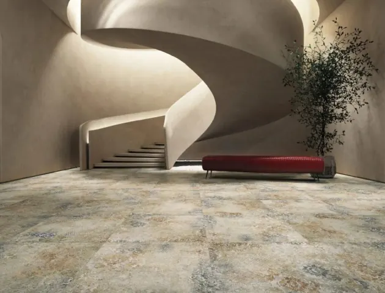
BOHEMY - egy csipet vintage
A Stargres Bohemy Blue 60x60 és 60x120 - vintage porcelán fal- és padlóburkolat belső terekbe. A magas minőség kiváló dizájnnal párosul, így ideális termék mindazok számára, akik elegáns és eredeti elrendezésű csempéket keresnek. PEI IV-es kopásállógású és R10-es padlólap, mely igazán egy hiánypótlás a Kerko választékában.
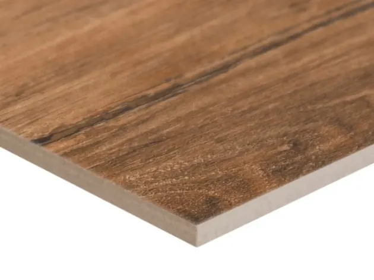
Ha famintás lap - akkor CERRAD
A fahatású kerámia burkolatok az egyik legnépszerűbb fal- és padlóburkolati anyag otthonunkban, lakásokban, beltéren és kültéren egyaránt. Praktikusak és tartósak, a Cerrad kínálatában pedig különféle méretekben, színekben és mintákban kaphatók, így bármilyen elképzelhető térbe beilleszthetők.
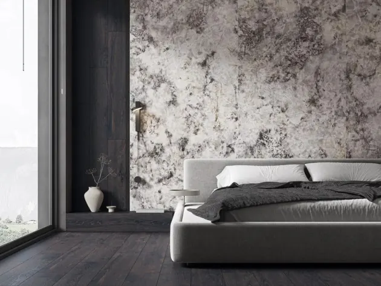
Monumental, a maximalizmus új arca
A MONUMENTAL nagyméretű lapok sora új kollekciókkal gazdagodott, amelyeket a természetes kőminták és a betonszerkezetek ihlettek. A nagy formátumú lapok falra, padlóra és dekoratív burkolatként használhatók beltérben és kültérben egyaránt.
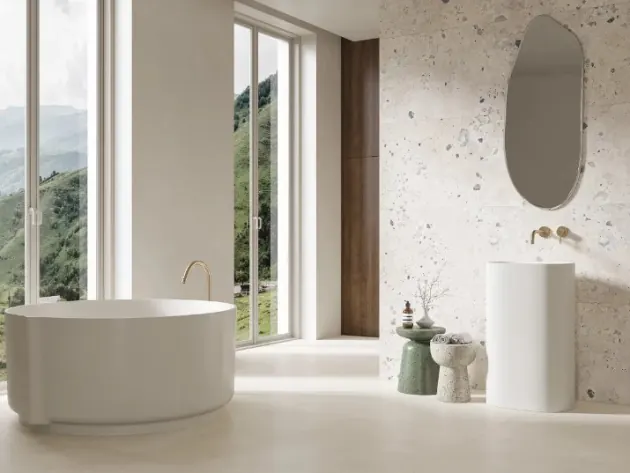
ARCHITEQ - a sokoldalú kollekció
A Paradyz Architeq kollekciója hatalmas méretválasztékkal áll rendelkezésünkre: 30x60, 60x60, 60x120, 120x120 és 120x280. Ennek a matt, R10 csúszásmentességgel rendelkező családnak viszont nem csak ez az egy vonzereje van.
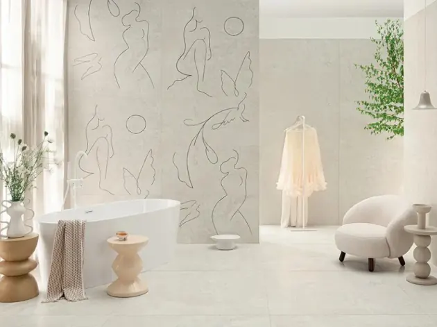
Újdonságokkal készülünk 2026-ra
A Tubadzin újdonságai minden évben gyönyörűek. Ez nem csak a falicsempékről, de a padlólapokról is elmondható. A legújabb mintalapokat megtekintve rögtön eldőlt, hogy választékunk bővítése érdekében szükséges az alábbi termékek készletezése. Így a Kerko csapata ezzel is készül a 2026-os évre.

Bemutatkozik a CADENCE
Modernizmus egy új dimenzióban. Elég nehéz képesség egyensúlyt tartani a múlt, jelen és jövő között, de mégis ezt kínálja a Cadence kollekció. Bepillantást nyerhetünk a térek kortárs értelmezésébe, ahol a dekoráció funkcionálissá válik, és a forma finom, modern kifejezést kap.
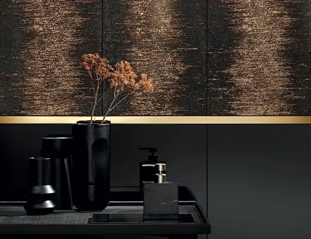
Bemutatkozik a STARDUST
Válaszd a 33x90 cm-es Stardust kollekciót a Tubadzin kínálatából, amennyiben elegáns, természetfeletti hatású belső teret szeretnél létrehozni. A Stardust egy szupernova villanására, a csillagporra emlékeztet, mely rendkívül intenzív fényt küld az űrbe.
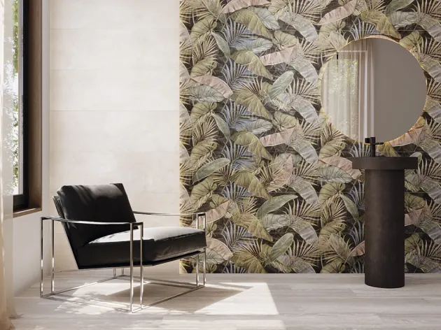
Mire figyeljünk mintás dekor választásánál!
A dekorok fontos szerepet játszanak a megfelelő burkolat kiválasztásában. Nagy mértékben befolyásolják döntésünket a csempéhez jól megválasztott mintázatok, divatos színek, rajzolatok.
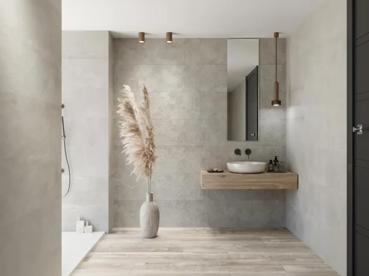
Undefasa újdonságok novembertől
Legutóbb idén januárban frissítettük az Undefasa állványt és már itt is az újabb 3 panel, a Slate Origin és az Impronta termékcsaládokkal.
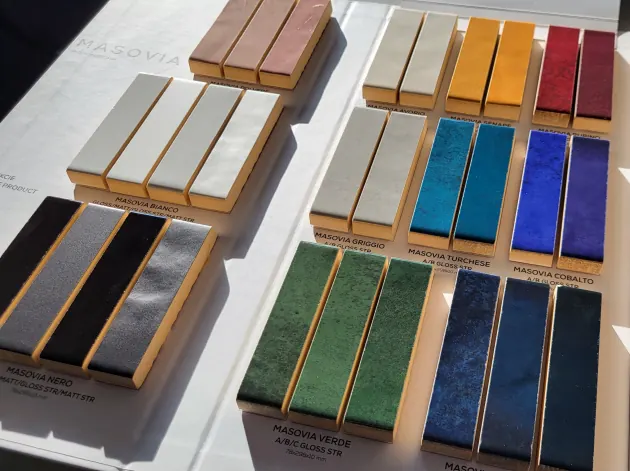
MASOVIA - a szín bennünk van
Dorota Koziara a lengyel táj színei által inspirált, egyedülálló Cielo e Terra kollekció megálmodója. Munkái között olyan nemzetközi márkák számára készült tervek is szerepelnek, mint: Alessi, Hermes, Christian Dior, Swarovski. De mi ihlette a termékcsalád nevét? Mely színeket találja meg készleten a Kerkonál? Többek között ezekre a kérdésekre is választ kapunk aktuális blogunkban.
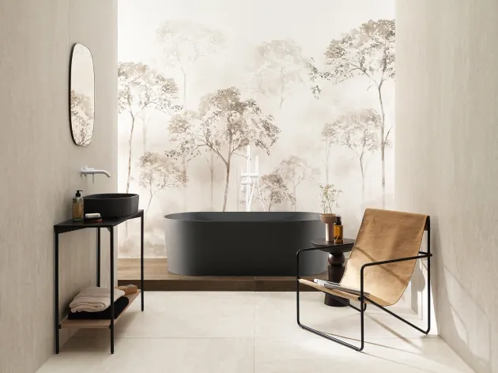
TUBĄDZIN – Praktikus Monolith megoldások
A Tubadzin elkészítette új LOOKBOOK 2025/2026 katalógusát, melynek a CONTRAST nevet adta. A katalógus a Tubadzin weboldaláról letölthető. A kiadványban összefoglalásra kerüt a Cersaie-on bemutatott minden termékcsalád.
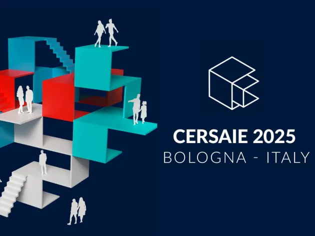
CERSAIE 42.
A kerámialapok és fürdőszobabútorok nemzetközi kiállítása szeptember 26-án, pénteken zárult. 2025-ben is öt napot szenteltek az innovációnak, a kapcsolatépítésnek és a kiváló minőségű termékek felfedezésének: a Cersaie összehozta a design és a tervezés nemzetközi vezetőit.
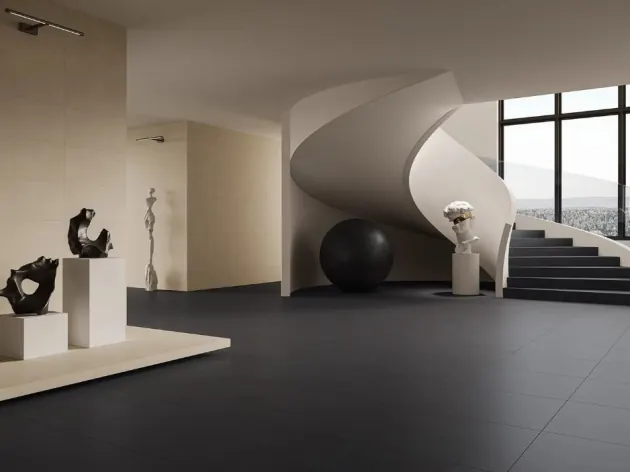
PARADYZ mázatlan gres- ARCHICROSS BASE
Anyagában színezett kollekciót keresel projekt ajánlatba? A Paradyz Archicross base családja számodra a megfelelő megoldás. A termékcsalád elemei jelenleg 29,8x59,8 cm-es és 59,8x59,8 cm-es méretben érhetőek el.
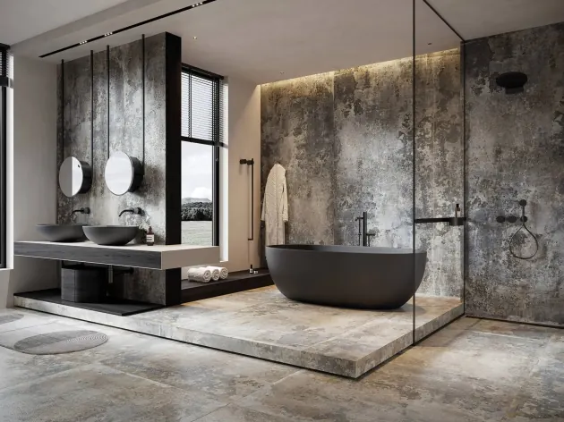
ENDLESS TIME - szeptembertől akcióban
Az Endless Time az első családok között volt, melyeken a Cerrad bemutatta új, silky cristal lappato felületét. A Modern "Endless Time" padlólapunk kiváló minőségű porcelán kőagyagból készült, és robusztus, tartós felületet biztosít.
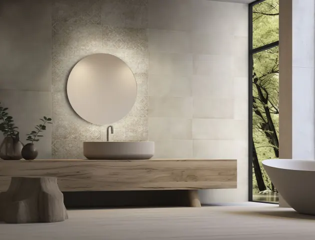
KEROS - lélekkel teli kerámiák
A Kerko csapata motivált abban, hogy megtalálja a partnerei számára azokat a termékeket, melyekre a vásárlóiknak igénye van. A kis és közepes méretű falicsempék választékának csökkenésével szükségét éreztük a 25x50 cm-es lapok méretének megtartását egy olyan piacon, ahol minden gyártó az egyre nagyobb méretek felé törekszik fejleszteni.
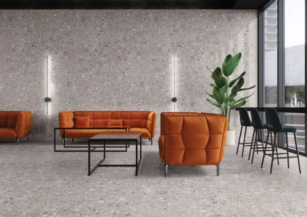
Terminal – a versenyképes kollekció
A Cerrad Terminal gres porcelán padlólapok 30x60 és 60x60 méretben egyaránt elérhetőek a Kerko raktárkészletéről. Vonzó tulajdonságai között szerepel, hogy rektifikált élei ellenére versenyképes áron juthatunk hozzá mindkét méretben. Csúszásmentessége R10, ami garantája a megfelelő tapadást és a háziasszonyok számára sem jelent nagy kihívást a takaríthatósága. Kopásállósága mindhárom színének PEI IV., mely megfelel a lakossági használathoz. Válaszd ki, hogy neked melyik tetszik a legjobban: beige, grey vagy silver?
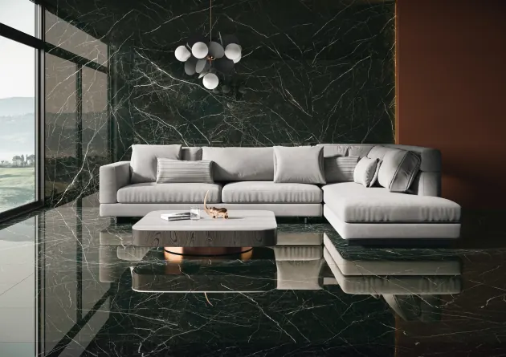
Támadnak a két és fél méteres „MONOLITH” burkolólapok.
Évtizedes távlatban sem tapasztalható olyan ütemű fejlődés a hidegburkolatok terén, mint az utóbbi esztendőkben jellemző volt. Néhány év alatt rohamléptekkel hágtuk át az addig elképzelhetetlennek hitt dizájnok és méretek korlátait. Egyre nagyobbat és nagyobbat: A 15x20 cm-es klasszikus csempéktől, viszonylag jól követhetők voltak az események a 25x40 cm-es fali csempékig. Ez idő tájt dívott a 60x60 cm-es, akkoriban brutálisan nagynak számító padlólap. Ez a 2000-es évek közepe. Ekkor felgyorsultak a történések, a kiállításokon sorra jelentek meg a 60 cm-nél hosszabb élhosszúságú lapok. Előbb a fali csempék, aztán kis késéssel a padló lapok.
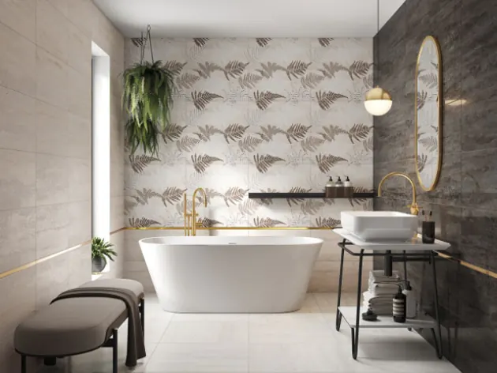
Új Domino termékcsaládok
Május második felében elindítjuk nagyszabású Tubadzin állvány frissítésünk első ütemét. Ennek keretében megújul a DOMINO állványunk választéka 3 új termékcsaláddal. A Homeinfo Fürdőszoba és Otthoni Wellness kiállításra kilátogatók már találkozhattak az új termékcsaládokkal január végén a Kerko standján. BARBADOS 30,8x60,8 LINEA 29,8x59,8 TERRANE 30,8x60,8 A 3 család 3 különböző felületet mutat be. A Barbados kőhatású, a Linea márvány erezetes, a Terrane pedig a travertin kő mintázatát követi.
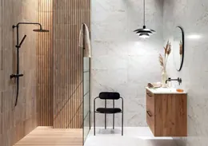
LAMELLA-hatás a kerámiában is
Napjaink divatját csempésszük a fürdőszobába a lamella hatású Rochelle Wood STR. 29,8x74,8 cm méretű falicsempével. A fali burkolat a Tubadzin Rochelle kollekció tagja, mely önállóan nappali, előszobafal dekorációjaként vagy a teljes termékcsalád használatával fürdőszoba komplett burkolataként is megállja helyét. A termék a 29,8x74,8 cm-es méretéből adódóan a Prestige Line termékcsoportban található. Sötét árnyalatú álfugájának köszönhetően tökéletesen illeszthető hozzá a ma oly trendi fekete csaptelep és zuhanyrendszer.